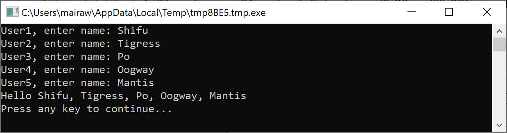
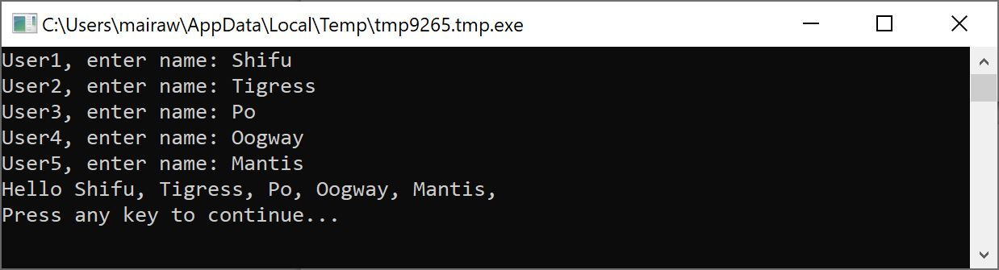
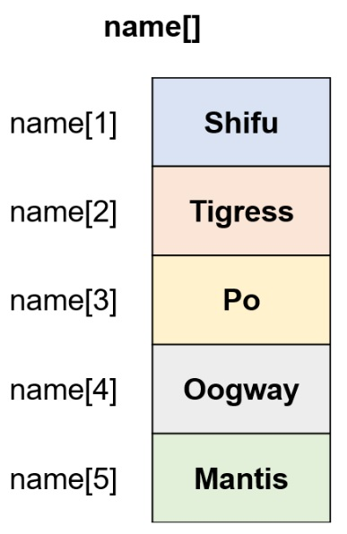
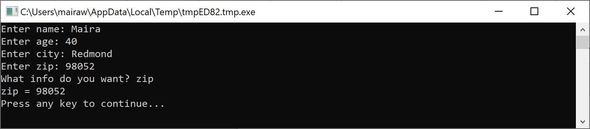
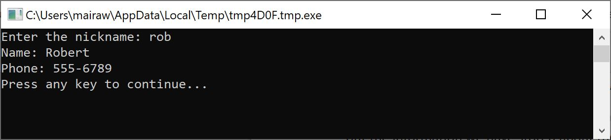
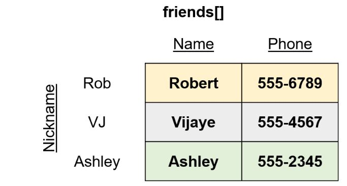
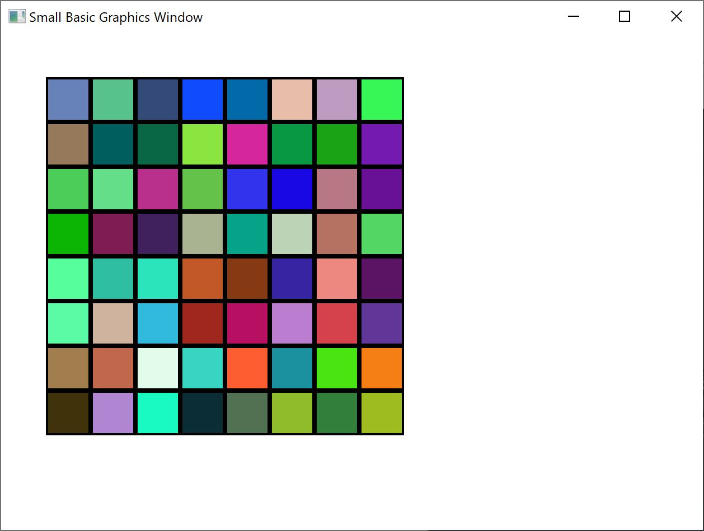
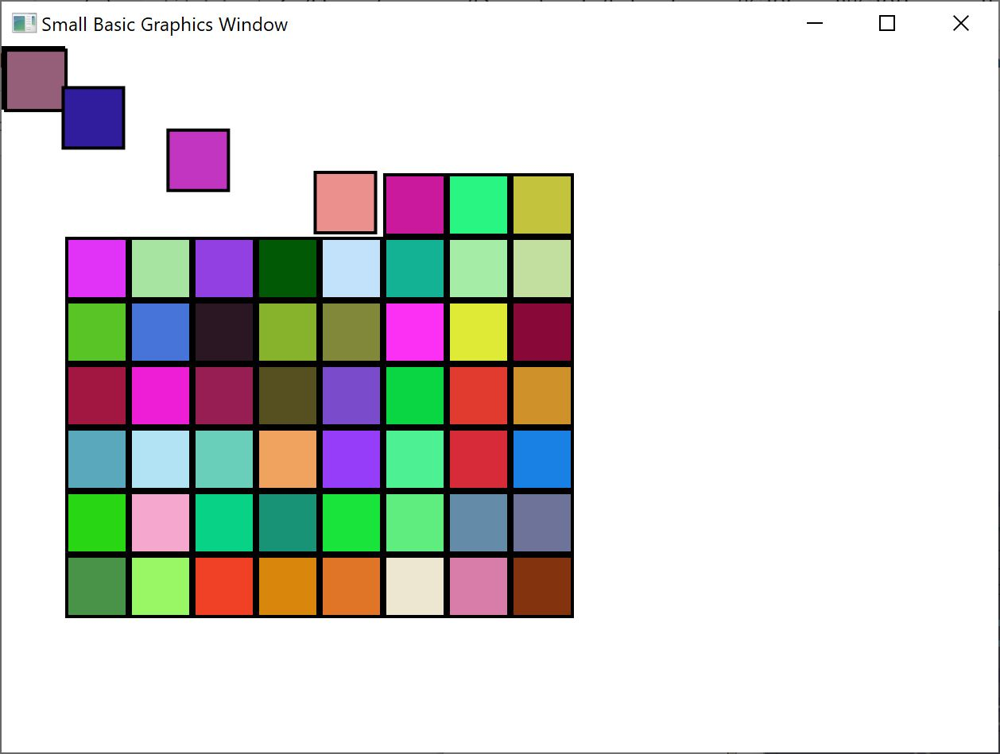

By now you must be well versed with how to use variables – after all you have come this far and you’re still having fun, right?
Let’s for a moment, revisit the first program we wrote with variables:
TextWindow.Write("Enter your Name: ")
name = TextWindow.Read()
TextWindow.WriteLine("Hello " + name)In this program, we received and stored the name of the user in a variable called name. Then later we said “Hello” to the user. Now, let’s say there is more than one user – say, there are 5 users. How would we store all their names? One way of doing this is:
TextWindow.Write("User1, enter name: ")
name1 = TextWindow.Read()
TextWindow.Write("User2, enter name: ")
name2 = TextWindow.Read()
TextWindow.Write("User3, enter name: ")
name3 = TextWindow.Read()
TextWindow.Write("User4, enter name: ")
name4 = TextWindow.Read()
TextWindow.Write("User5, enter name: ")
name5 = TextWindow.Read()
TextWindow.Write("Hello ")
TextWindow.Write(name1 + ", ")
TextWindow.Write(name2 + ", ")
TextWindow.Write(name3 + ", ")
TextWindow.Write(name4 + ", ")
TextWindow.WriteLine(name5)When you run this you’ll get the following result:

Figure 10.1 - Not using arrays
Clearly there must be a better way to write such a simple program, right? Especially since the computer is really good at doing repetitive tasks, why should we bother with writing the same code over and over for every new user? The trick here is to store and retrieve more than one user’s name using the same variable. If we can do that then we can use a For loop we learned in earlier chapters. This is where arrays come to our help.
An array is a special kind of variable which can hold more than one value at a time. Basically, what it means is that instead of having to create name1, name2, name3, name4 and name5 in order to store five user names, we could just use name to store all five users’ name. The way we store multiple values is by use of this thing called “index.” For example, name[1], name[2], name[3], name[4] and name[5] can all store a value each. The numbers 1, 2, 3, 4 and 5 are called indices for the array.
Even though the name[1], name[2], name[3], name[4] and name[5] all look like they are different variables, they’re in reality all just one variable. And what’s the advantage of this, you may ask. The best part of storing values in an array is that you can specify the index using another variable – which allows us to easily access arrays inside loops.
Now, let’s look at how we can put our new knowledge to use by rewriting our previous program with arrays.
For i = 1 To 5
TextWindow.Write("User" + i + ", enter name: ")
name[i] = TextWindow.Read()
EndFor
TextWindow.Write("Hello ")
For i = 1 To 5
TextWindow.Write(name[i] + ", ")
EndFor
TextWindow.WriteLine("")Much easier to read, isn’t it? Notice the two bolded lines. The first one stores a value in the array and the second one reads it from the array. The value you store in name[1] will not be affected by what you store in name[2]. Hence for most purposes you can treat name[1] and name[2] as two different variables with the same identity.

Figure 10.2 - Using arrays
The above program gives almost the exact same result as the one without arrays, except for the comma at the end of Mantis. We can fix that by rewriting the printing loop as:
TextWindow.Write("Hello ")
For i = 1 To 5
TextWindow.Write(name[i])
If i < 5 Then
TextWindow.Write(", ")
EndIf
EndFor
TextWindow.WriteLine("")Here's a visual representation of the name[] array, and how the different names get stored in it. Because of this storage, when name[1] was accessed for example, the name Shifu got outputted.

Figure 10.3 - Array visualization
In our previous program you saw that we used numbers as indices to store and retrieve values from the array. It turns out that the indices are not restricted to just numbers and in practice it’s very useful to use textual indices too. For example, in the following program, we ask and store various pieces of information about a user and then print out the info that the user asks for.
TextWindow.Write("Enter name: ")
user["name"] = TextWindow.Read()
TextWindow.Write("Enter age: ")
user["age"] = TextWindow.Read()
TextWindow.Write("Enter city: ")
user["city"] = TextWindow.Read()
TextWindow.Write("Enter zip: ")
user["zip"] = TextWindow.Read()
TextWindow.Write("What info do you want? ")
index = TextWindow.Read()
TextWindow.WriteLine(index + " = " + user[index])
Figure 10.4 - Using non-numeric indices
Let’s say you want to store the name and phone number of all your friends and then be able to lookup on their phone numbers whenever you need – kinda like a phonebook. How would we go about writing such a program?
In this case, there are two sets of indices (also known as the array’s dimension) involved. Assume we identify each friend by their nick name. This becomes our first index in the array. Once we use the first index to get our friend variable, the second of indices, name and phone number would help us get to the actual name and phone number of that friend.
Note: Array indices are not case sensitive. Just like regular variables, array indices match don’t have to match the precise capitalization.
The way we store this data would be like this:
friends["Rob"]["Name"] = "Robert"
friends["Rob"]["Phone"] = "555-6789"
friends["VJ"]["Name"] = "Vijaye"
friends["VJ"]["Phone"] = "555-4567"
friends["Ash"]["Name"] = "Ashley"
friends["Ash"]["Phone"] = "555-2345"Since we have two indices on the same array, friends, this array is called a two dimensional array.
Once we have set this program up, we can then take as input the nickname of a friend and then print out the information we have stored about them. Here’s the full program that does that:
friends["Rob"]["Name"] = "Robert"
friends["Rob"]["Phone"] = "555-6789"
friends["VJ"]["Name"] = "Vijaye"
friends["VJ"]["Phone"] = "555-4567"
friends["Ash"]["Name"] = "Ashley"
friends["Ash"]["Phone"] = "555-2345"
TextWindow.Write("Enter the nickname: ")
nickname = TextWindow.Read()
TextWindow.WriteLine("Name: " + friends[nickname]["Name"])
TextWindow.WriteLine("Phone: " + friends[nickname]["Phone"])

Figure 10.5- A simple phone book
Here is a visual representation of the friends array. The data is stored so that when friends["Rob"]["Phone"] is accessed, 555-6789 is returned. If you trace through the diagram, first going to the row that stores data for the nickname Rob, and then go over to the column that stores the Phone numbers data, you can see this value.

Figure 10.6- Multi-dimensional array visualization
A very common use of multi-dimensional arrays is to represent grids/tables. Grids have rows and columns, which can fit nicely into a two dimensional array. A simple program that lays out boxes in a grid is given below:
rows = 8
columns = 8
size = 40
For r = 1 To rows
For c = 1 To columns
GraphicsWindow.BrushColor = GraphicsWindow.GetRandomColor()
boxes[r][c] = Shapes.AddRectangle(size, size)
Shapes.Move(boxes[r][c], c * size, r * size)
EndFor
EndForThis program adds rectangles and positions them to form an 8x8 grid. In addition to laying these boxes, it also stores these boxes in an array. Doing so makes it easy for us to keep track of these boxes and use them again when we need them.

Figure 10.7 - Laying out boxes in a grid
For example, adding the following code to the end of the previous program would make these boxes animate to the top left corner.
For r = 1 To rows
For c = 1 To columns
Shapes.Animate(boxes[r][c], 0, 0, 1000)
Program.Delay(300)
EndFor
EndFor

Figure 10.8 - Keeping track of boxes in the grid